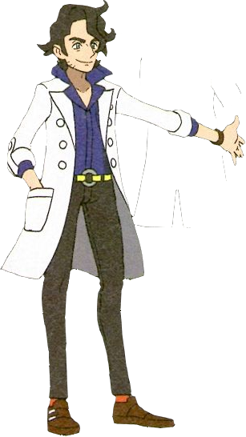
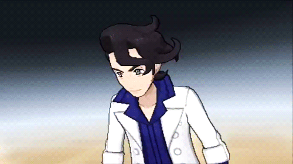

Professor Sycamore's been on my mind lately, especially in regards to his relationship with mega evolution. Mega evolution was first introduced to the franchise in Pokémon XY, and happens to be Professor Sycamore's main topic of research. With Pokémon Legends ZA on the horizon, I thought it would be fun to go deeper into mega evolution and, more importantly, the themes surrounding it. Let's take a look!
Mega evolution is very different from regular evolution. It's temporary, first and foremost, something that only happens during battle and then fades away. To achieve mega evolution, you need three things: a compatible Pokémon, the right stones (a mega stone and keystone), and most importantly, a strong bond between trainer and Pokémon. Professor Sycamore mentions this himself when he congratulates you in Coumarine City.
What's really interesting is how mysterious mega evolution still is during your journey through Kalos. When Professor Sycamore first sends you and your friends out on your adventure after you meet him in Lumiose City, he hints that you should ask around about this "new kind of evolution." But when you actually do that, you realize that most people, even in historic places like Camphrier Town, don't really know much about it at all.
Mega evolution is very fleeting, so.. well, it's not permanent, which I think is the whole point. It represents those special moments of connection that, like all meaningful experiences, can't last forever. There's something very lovely about how it shows the way our bonds with others can lift us beyond what we thought was possible, even if it's just for a little while. When a Pokémon mega evolves, it's breaking past what everyone thought was their final form, transcending those perceived limitations through the power of connection.

I also enjoy how mega evolution needs both the physical stones and that emotional bond. It feels like a perfect metaphor for balancing the tangible and intangible parts of life, while tying into XY's bigger themes about stones and the history between trainers and Pokémon. I have more thoughts about megastones and keystones that I'll try to write at a later point.
Professor Sycamore's focus on mega evolution really sets him apart from other regional professors, though it does connect him to Professor Rowan from Sinnoh, who's primary topic of research is evolution. This makes sense, since Sycamore was Rowan's student! Personally, I think mega evolution is so much more metaphysical than regular evolution. It exists in that borderland where science meets emotion, and I think that says a lot about Professor Sycamore's temperament. He's drawn to things that can't be easily measured or explained, things that need both scientific thinking and emotional understanding.
There's somethingentle about how he approaches the unknown. He's comfortable with mysteries, with open questions. He doesn't seem frustrated by what he doesn't understand... instead, he seems to value the journey of discovery more than having all the answers. That aligns perfectly with his philosophy of cherishing experiences over outcomes.
Speaking of which, Professor Sycamore consistently talks about the importance of treasuring moments. This becomes really clear during that conversation in Lysandre Café, where he tells you:
This really gets to the heart of who he is. For Professor Sycamore, meaning comes from connection, not permanence. It's about what transforms us through experience, not what lasts forever. He values the process over the outcome, the journey over the destination. You can see this philosophy in how he talks to you from the very beginning of the game, and it shows up again and again throughout your adventure.
 One of my favorite moments that reveals so much about Professor Sycamore is that hidden message in Couriway Town. If you take the time to find it (he calls it a "treasure hunt"), you discover something really personal:
This always makes me a little sad... here's someone who seems so confident and put-together, but underneath he's been struggling with questions about who he is and where he's going. The contrast between his public warmth and this vulnerability feels very human. His hope that his future self could "boast that you're living each day to the fullest" reinforces what he's always telling you:that it's about engaging with life, not achieving specific goals.

Couriway Town is described as "a town connecting differences". It's literally a train station, a place of transition and movement. Finding Professor Sycamore's childhood letter there feels intentional, like discovering him at his own crossroads. When he tells you to "treasure these moments," it's not just pleasant advice, it's wisdom earned from his own uncertainty about the future.
Here's something that I find really fascinating about Professor Sycamore: despite being the leading researcher on mega evolution, he can't actually do it himself. The games mention he tried training at the Tower of Mastery but left early, believing he wasn't capable of mastering it. That personal limitation is a very important aspect of who he is.
Maybe it stems from that self-doubt we see in his hidden letter. That uncertainty about his identity might create a barrier to the absolute conviction mega evolution seems to require. There's something beautifully ironic about it: the man who understands mega evolution's foundations can't experience it personally. He's positioned as an observer rather than a participant, someone who helps others transform while remaining unchanged himself.
After you defeat him in battle in Couriway Town, he says something that really captures this:
He speaks like someone who recognizes something beautiful from the outside, something he can't quite reach himself. But I don't think this limitation diminishes him at all. If anything, it highlights something important about the different ways people can contribute. Sometimes understanding comes from distance rather than immersion.
(I'm focusing on the game version of Professor Sycamore here, by the way... the anime takes his character in some different directions!)
Professor Sycamore's design really reflects his philosophical position too. His style mixes vintage elements with contemporary touches, and his lab balances classical architecture with modern technology. It's like he's showing us that honoring the past and embracing the future aren't opposites - they can work together beautifully.
When you meet him in Anistar City, he shares his theory about mega evolution's origins:
I love his excitement about connecting the ancient Anistar sundial with the modern mega ring. It shows how he believes progress comes from dialogue between tradition and innovation. That the future needs both roots and branches, like a tree growing.

Professor Sycamore's relationship with Lysandre reveals another side of his character, a very important one at that. Despite all the warning signs, Sycamore consistently sees the best in his former student. This seems connected to his romantic notions about heritage and destiny: he's impressed by Lysandre's royal ancestry and his ability to mega evolve.
It shows a significant blind spot in someone who's usually quite perceptive. Despite his emotional intelligence, Professor Sycamore misses Lysandre's extremism until it's far too late. After Team Flare's defeat, he acknowledges this failure:
This admission shows how his tendency to see potential in others can become a kind of naivety. His belief that Lysandre could "lead everything to greater heights" demonstrates how his optimism sometimes prevents him from seeing darker possibilities.
The contrast between them is really striking when you think about it. Both men see problems with the world's future, but they respond so differently: Lysandre with control and elimination, Professor Sycamore with adaptation and growth. Lysandre fears loss and wants to preserve beauty permanently, while Professor Sycamore embraces change and celebrates fleeting moments.
 What I find most touching about Professor Sycamore is how he positions himself as a facilitator for others' experiences with mega evolution. Throughout your journey, he's constantly providing support, giving you a starter Pokémon capable of mega evolution, distributing mega stones, sharing research insights, helping upgrade your mega ring. He creates the conditions for others to experience something he can't personally access.
When you consider mega evolution's temporary nature... those cherished moments of perfect connection between trainer and Pokémon, Professor Sycamore becomes something like a memory-maker. His inability to achieve mega evolution himself doesn't diminish his contribution; it emphasizes its selflessness. There's genuine joy in how he witnesses others' achievements, and I think that suggests facilitation itself provides him with fulfillment.
He can't personally experience the phenomenon he's devoted his life to studying, but he can create the conditions for others to do so. It's a different kind of participation, you know? indirect, but no less meaningful. His relationship to mega evolution positions him as someone who embodies the beauty of transient bonds, from the outside.
That hidden message in Couriway Town takes on even more meaning when you think about it this way. His question to his future self "did you become who you wanted to become?" suggests he views life itself as a kind of evolution, with all the uncertainty and vulnerability that meaningful change requires. He teaches others about growth and transformation while grappling with his own questions about identity and time.
Professor Sycamore's character, mega evolution, and their ties to XY combined feels like a representation on time, memory, and connection. His position at the intersection of tradition and innovation, his fondness for the past combined with optimism for the future, makes him the perfect person to explore what mega evolution really means. He understands that this temporary transformation isn't just a battle mechanic, it's something deeper about how our most connections often manifest as moments to be treasured, not maintained.
Maybe that's why I find him so compelling? In a world that often prioritizes permanence and achievement, Professor Sycamore champions the beauty of fleeting experiences and the growth that comes from helping others flourish. He reminds us that sometimes the most meaningful way to participate in something is to help others experience it, even when, especially when, we can't access it ourselves.